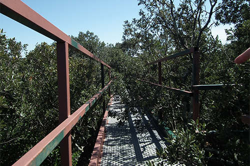

Détail, dispositif de sècheresse controlée, Site expérimental CEFE - CNRS de la Forêt de Puehabon, photo Sabrina Issa, 2016.
CONCERTO POUR FLUX DE SEVE
Souffle des arbres et tremblement de terre
C'est au cœur d’une forêt, que Concerto pour flux de sève, s’attache à rendre audible le rythme biologique des plantes et la corrélation, complexe, de celui-ci avec les données environnementales. Les données météorologiques de la forêt et le flux de sève ascendant dans les arbres deviennent une matière sonore, spatialisée sur le site à la manière d’un orchestre.
Dans l’installation, c’est notre cheminement à travers les arbres qui nous communique le rythme, l’intensité et les variations d’un environnement où les évolutions sont partagées. Dans ce projet, notre démarche vise à rendre une dimension « physique » de la forêt émotionnelle et tangible en réunissant sur un même temps l’analyse et l’expressivité du vivant.
La forêt domaniale de Puechabon étudiée depuis 1984 par les chercheurs du CEFE-CNRS (Centre d’Ecologie Fonctionnelle et Evolutive à Montpellier). Afin de répondre aux questions liées aux changements climatiques et leurs impacts sur l’écosystème forestier, le site est équipé de différents dispositifs qui permettent l’étude expérimentale de la sécheresse à différentes échelles de temps.
Site expérimental de Puéchabon (Lien)

Détail, plateforme, Site expérimental CEFE - CNRS de la Forêt de Puehabon, photo Sabrina Issa, 2016.